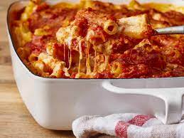

Cheesy Baked Ziti

A fantastic meal the whole family will love!
This three cheese blend pairs excellently with the ziti noodles and marinara sauce. Baked to perfection, you're going to want to be sure to cook extra!
Ingredients:
- 1 (16 ounce) package ziti pasta
- 24 ounces ricotta cheese
- 1 pound shredded mozzarella cheese
- 1 egg, beaten
- 1 (32 ounce) jar spaghetti sauce
- 1/4 cup grated Parmesan cheese
Cooking Instrucrions:
- Preheat the oven to 375 degrees F (190 degrees C). Lightly grease a 9x13-inch baking dish.
- Meanwhile, bring a large pot of lightly salted water to a boil. Add ziti and cook for 8 to 10 minutes or until al dente; drain and rinse.
- Combine cooked ziti, ricotta cheese, mozzarella cheese, egg, and 1 1/2 cups spaghetti sauce in a medium bowl.
- Transfer into the prepared baking dish. Top with remaining spaghetti sauce, then sprinkle with Parmesan cheese.
- Bake in the preheated oven for 30 minutes; let stand for 15 minutes before serving.
Return to Home Page